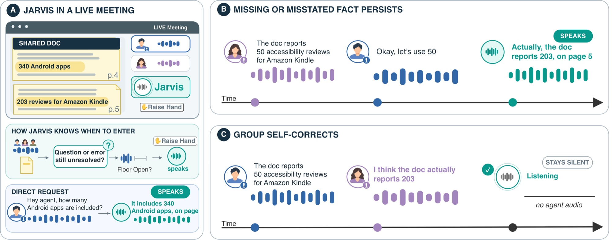

Speech agents are reactive and dyadic: they speak when spoken to, and to one person at a time. We ask what it
takes for a speech agent to instead take part in a conversation among several people and speak up only when it
can help. We introduce Jarvis, a real-time proactive speech agent that audibly participates in multi-party human
conversations. Grounded in a document shared beforehand, Jarvis follows the discussion and intervenes when the
group misses or misstates a fact and does not correct itself within a few turns. We make three contributions: a
problem setting based on epistemic breakdowns that makes proactive intervention measurable, realized as
CHI-180-proactive, a synthetic multi-party dataset seeded with known gaps, errors, and
self-corrections; a proactive backbone that harnesses a small, open-weight model with deterministic checks and
grounds every claim in a source sentence; and interaction techniques for taking the floor in live speech and
showing the cited evidence on screen. On CHI-180-proactive, Jarvis is correct on most events it
addresses and stays silent 97% of the time when the group resolves an issue itself. A live study with 23
participants confirms these trends with real-time interventions.

Jarvis in a live multi-party meeting. (A) Jarvis joins the meeting as a participant, follows the conversation against a shared document, and can answer direct questions. For proactive intervention, it has two modes: 1) raises its hand to seek permission or 2) waits until no participant holds the floor and speaks directly. (B) If a document-grounded missing or misstated fact remains unresolved, Jarvis speaks to correct it and cites the relevant page. (C) If the group corrects the error first, Jarvis remains silent.